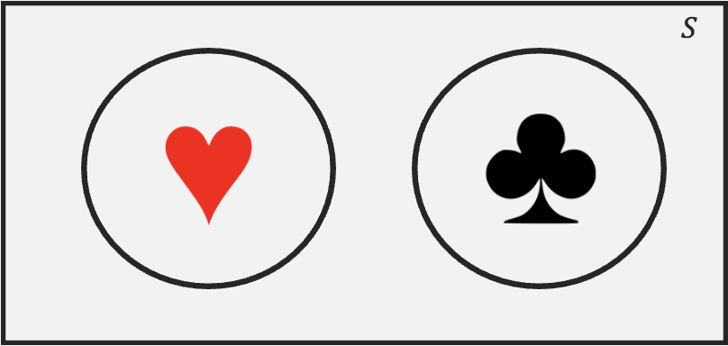
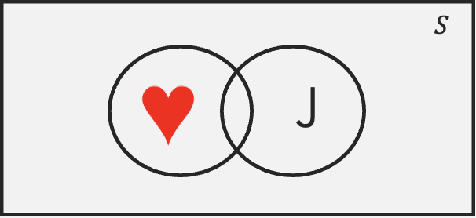
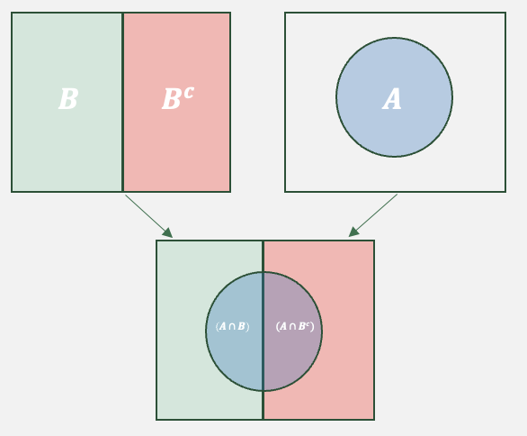
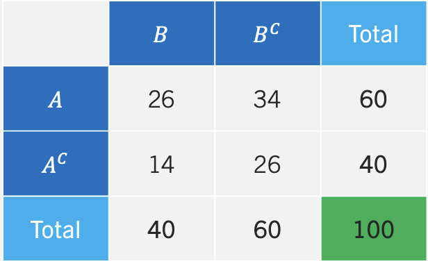
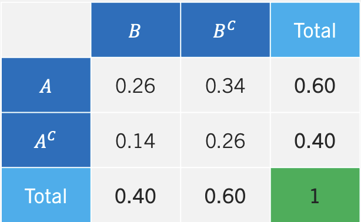

8 Probability I
Decision-making under uncertainty is at the core of business strategy, risk management, and forecasting. This section will study tools and concepts that will make us smarter when making data-driven decisions. Mastering probability in finance, marketing, supply chain, or operations helps professionals analyze risks, optimize strategies, and stay competitive in uncertain environments. We start with the basic concepts and ideas of probability below.
8.1 Frequentist Vs. Bayesian Statistics
There are two interpretations of probability. The frequentist interpretation assumes that probabilities represent proportions of specific events occurring over infinitely identical trials. In contrast, the Bayesian interpretation assumes that probabilities are subjective beliefs about the relative likelihood of events. Despite their philosophical differences, both approaches adhere to the core rules of probability —including the Addition Rule, Multiplication Rule, and Bayes’ Theorem— which provide a consistent mathematical foundation for making probabilistic inferences.
Ex: A company might use frequentist statistics to determine the average return rate of a product, but apply Bayesian methods to adjust sales forecasts based on changing consumer behavior.
8.2 Experiments and Sets
The following concepts form the foundation of probability theory. They provide a structure that is useful when analyzing uncertainty and randomness.
An experiment is a process that leads to one of several outcomes. Ex: Tossing a Die, Tossing a Coin, Drawing a Card, etc.
An outcome is the result of an experiment. Ex: A coin landing on heads, drawing the ace of spades.
The sample space \((S)\) of an experiment contains all possible outcomes of the experiment. Ex: \(S=\{1,2,3,4,5,6\}\) is the sample space for tossing a die.
An event is a subset of the sample space. Ex: \(A=\{2,4,6\}\) is the event of tossing an even number when rolling a die. \(B=\{1A,1D,1S,1H\}\) is the event of drawing an ace from a deck of cards.
8.3 Basic Probability Concepts
A probability is a numerical value that measures the likelihood that an event occurs. To calculate probabilities, we find the ratio between favorable outcomes and total outcomes. Hence, the probability of an event is given by:
\[ P(A)=\frac{Number\ of\ outcomes\ in\ A}{Number\ of\ outocomes\ in\ Sample \ Space} \]
The probability of A satisfies \(0\leq P(A) \leq1\). Since A is a subset of S, the number of elements in A is at most that of the sample space S. Hence, if A=S, then P(A)=1. If A is a null event (i.e., has no elements) P(A)=0 and is impossible. We can conclude that P(A) ranges from 0 to 1, inclusive.
In many cases, we analyze how multiple events interact within the sample space, particularly when they either exclude each other or collectively cover all possible outcomes.Mutually exclusive events do not share any common outcomes. The occurrence of one event precludes the occurrence of others. Exhaustive events include all outcomes in the sample space.
Given these concepts if follows that the sum of the probabilities of a list of mutually exclusive and exhaustive events equals \(1\). Formally, we state: \(\sum P(x_i)=1\), where \(x_i\) is outcome \(i\).
Example: Let’s consider a standard deck of 52 playing cards to illustrate the key probability concepts.
If we randomly draw one card from a standard deck, the sample space \(S\) consists of all 52 cards. Suppose we define event \(A\) as drawing a red card. Since there are 26 red cards, the probability is:
\[ P(A) = \frac{\text{Number of red cards}}{\text{Total number of cards}} = \frac{26}{52} = 0.5 \]
Since \(( 0 \leq P(A) \leq 1)\), this follows the basic probability rule. Next let’s consider mutually exclusive events. Let event \(B\) be drawing a heart and event \(C\) be drawing a spade. Since a single drawn card cannot be both a heart and a spade, these events are mutually exclusive.
The four suits (hearts, diamonds, clubs, spades) form an exhaustive set, because every card belongs to exactly one suit. The sum of their probabilities equals 1:
\[ P(\text{hearts}) + P(\text{diamonds}) + P(\text{clubs}) + P(\text{spades}) = \frac{13}{52} + \frac{13}{52} + \frac{13}{52} + \frac{13}{52} = 1 \]
Note the this also satisfies the rule \(\sum P(x_i) = 1\), where \(x_i\) represents each possible outcome (suit).
8.4 Venn Diagram
A Venn diagram is a visual representation of sets and their relationships. It consists of overlapping circles, each representing a set. Below is an example:
The rectangle enclosing the circles represents the sample set (i.e., the 52 playing cards). Each circle represents a set or event The heart circle contains all 13 hearts; the same holds for the clubs circle. The area outside the circle that has hearts represents its complement, meaning elements that are clubs, spades, or diamonds. Since the two sets do not overlap, they are mutually exclusive (i.e., if a card is a heart, it can’t be a spade). The total area covered by both sets represents the union denoted by \(\cup\). This is the set that contains all elements that belong to at least one of the sets. Formally, we would represent this set as \((Hearts \cup Spades)\).

The overlapping region of two sets contains elements that belong to both sets. This region is called the intersection. The intersection contains elements that are Hearts and Jacks (i.e., the jack of hearts). Formally, we denote the intersection by \((Hearts \cap Jacks)\).
8.5 Probability Rules
Probability rules help us quantify uncertainty, avoid cognitive biases, and make rational predictions based on available data. These rules allow us to make reliable decisions. Below we introduce some useful rules.
Complement Rule
The Complement Rule state that: \[P(A^c)=1-P(A)\] where \(A^c\) is the complement of \(A\). This rule is useful when calculating probabilities for complex scenarios, where finding the probability of the complement is easier than computing the event itself.
Ex: The probability of drawing a spade, diamond or clubs can be estimated by just calculating the probability of drawing a heart. Since the probability of drawing a heart is \(P(Heart)=\frac{13}{52}\), then using the complement rule, \(P(Not \text{Heart})=1-\frac{13}{52}=\frac{39}{52}\)
Addition Rule
The Addition Rule states:
\[P(A \cup B)=P(A)+P(B)-P(A \cap B)\] where \(\cap\) is intersection and \(\cup\) is union. This formula prevents double-counting when events overlap by including the intersection of events.
Ex: Let’s calculate the probability of drawing either a heart or a face card. If we let event \(A\), be drawing a heart, and event \(B\) be drawing a face card, the probability is given by: \[P(A \cup B)=\frac{13}{52}+\frac{12}{52}-\frac{3}{52}=\frac{22}{52}\]
Multiplication Rule
The Multiplication Rule states: \[P(A \cap B)= P(A|B)P(B)\] where \(P(A|B)\) is the conditional probability. Conditional probability measures the likelihood of an event occurring given that another event has already happened. If we reorganize the formula above we can get:
\[P(A|B)=\frac{P(A \cap B)}{P(B)}\] Note that his formula focuses on cases where Event B has already occurred. We can then find the fraction the cases where Event A also happens.
Ex: Suppose we randomly draw two cards from a standard deck of 52 cards, without replacement. The probability that both cards are aces is given by:
\[P(Ace \cap Ace)=P(Ace|Ace) \times P(Ace)= \frac {4}{52} \times \frac{3}{51}\] Lastly, if events \(A\) and \(B\) are independent, we can simplify the multiplication rule to:
\[P(A \cap B)= P(A)P(B)\] Hence, we can define independence as: events \(A\) and \(B\) are independent if the occurrence (or non occurrence) of one does not affect the probability of the other occurring.
Ex1: Suppose we randomly draw a card from a standard deck, replace it, and then draw another card. The probability of drawing heart in the first draw is \(13/52\), the probability of drawing a spade in the second draw is also \(13/52\).
Ex2: Suppose that the weather is sunny, this has no effect on the outcome of a lottery. Hence, the weather and lottery outcomes are independent
Law of Total Probability
The Law of Total Probability states: \[P(A)=P(A \cap B)+P(A\cap B^c)\] The formula mainly states that If an event \(A\) can occur in multiple mutually exclusive scenarios (or conditions), then the total probability of \(A\) is the sum of its probabilities under each scenario, weighted by how often those scenarios occur. By using the multiplication rule we can alternately show the law of total probability as: \[P(A)=P(A|B)P(B)+P(A|B^c)P(B^c)\] The Venn diagram helps us visualize the law of total probability.

The image shows how event \(A\) can occur. Essentially, when \(B\) occurs \(A\) is possible in the left semicircle. When \(B^c\), then \(A\) is possible in the right semicircle. The addition of both semicircles, complete set \(A\).
Ex: Consider the sets face cards and hearts. The entire set of hearts can be completed by taking face cards that are hearts, and non face cards (the complement of face cards) and hearts.
Bayes’ Theorem
Bayes’ Theorem states:
\[P(A|B)= \frac{P(B|A)P(A)}{P(B)}\] In essence, Bayes’ theorem is a way of updating probabilities in light of new evidence. The theorem tells us that the probability of an event A given that we have observed some evidence is equal to the prior probability (\(P(A)\)) times a factor that measures the informativeness of the observed evidence \(P(B|A)/P(B)\).
Example: Assume that a rare form of cancer affects 1% of the population. That is, 1 out of 100 people will likely be affected by it. There is a test for the cancer, but it is imperfect. In particular, if you don’t have cancer, the test says that you do 10% of the time (false positive rate). Also, if you do have cancer, it will tell you that you don’t have it 5% of the time. Let’s say you get tested, and your doctor calls you and says you have tested positive. How likely is it that you have this type of cancer?
We can use the Law of Total Probability and Bayes’ theorem to answer this question. Let’s first identify what we want to estimate. Since we need to figure out the likelihood of having cancer, given that we tested positive, we are looking for \(P(C|+)\). Now, we can set up Bayes’ rule to see what additional information we need to find our desired value. Bayes’ rule states:
\[P(C|+)= \frac{P(+|C)P(C)}{P(+)}\] Since the problem does not provide the \(P(+)\) we must estimate it with the Law of Total Probability, mainly:
\[P(+)=P(+|C)P(C)+P(+|NC)P(NC)=(0.95 \times 0.01+(0.1 \times 0.99)=0.1085\] We can now use this probability to find our new belief that we have cancer:
\[P(C|+)= \frac{(0.95 \times 0.01) }{0.1085}=0.0875\] In conclusion, if we before thought we had a \(1%\) chance of having the rare form of cancer, once we were told that we tested positive, we should update our belief to about \(8.75%\).
8.6 Contingency Tables
A contingency table (or cross-tabulation) summarizes the relationship between two or events (or variables). It is particularly helpful when analyzing frequencies of events and there relationship to other events.
The contingency table below shows the frequency of event A and B occurring/not occurring.

We can see that event A occurs 60 times and that event B occurs 40 times. Most importantly, we can also see how the two events are not mutually exclusive, since A and B occur 26 times. The table can be easily translated to probabilities, by divinding each entry by the total amount of outcomes (i.e., 100). We call the table that includes probabilities the joint probability table.

In the middle of the table we have the joint probabilities or intersections of events (i.e., \(A \cap B\), \(A \cap B^c\), etc.). The values in the totals columns are the probabilities of each event happening (i.e., \(P(A)\), \(P(B^c)\), etc.). We call these probabilities marginal probabilities since they reside at the margin of the table.
8.7 Counting Rules
Counting rules are useful in probability as they allow us to determine the number of ways events can occur without listing out every possibility. Essentially, they facilitate the enumeration of possible outcomes for large sets.
Factorial
To illustrate our first counting rule, consider the number of ways that we can organize a group of three people (Ann, Beth, Charlie). The enumeration of all the possible orderings in this case is not that tedious and it can be shown in a table:
| Ordering | Order |
|---|---|
| 1 | (Ann, Beth, Charlie) |
| 2 | (Ann, Charlie, Beth) |
| 3 | (Beth, Ann, Charlie) |
| 4 | (Beth, Charlie, Ann) |
| 5 | (Charlie, Ann, Beth) |
| 6 | (Charlie, Beth, Ann) |
The table shows that there are six possible ways to organize a group of three people. The Factorial counts how many ways a group of \(N\) objects can be organized. Formally, we write:
\[Factorial=N!\]
where the operator \(!\) means to take the product of all positive integers from \(N\) down to \(1\). Additionally, \(0!\) is equal to zero. If we then try to find in how many ways we can organize a group of three people, we can avoid enumeration by calculating \(3!=3 \times 2 \times 1=6\).
Ex: Let’s assume that a manager has locked down the first five batters in a given game, but is undecided on the batting order. The number of ways that he can organize the five batters is given by \(5!=5 \times 4 \times 3 \times 2 \times 1=120\).
Combinations
The Combination function counts the number of ways to choose \(x\) objects from a total of \(n\) objects. The order in which the \(x\) objects are listed does not matter. If repetition is not allowed use: \[C(n, x)= \frac{n!}{(n-x)!x!}\] Ex: Let’s imaging visiting the Mexican restaurant Chipotle. We are choosing a bowl for lunch and we can choose from the following items: beans, chicken, rice, pico, guac, and beef. If we are only allowed to select four items out of the six, in how many ways can we construct a bowl? Below we use the combination formula to show that there are \(15\) possible bowls.
\[C(6, 4)= \frac{6!}{(6-4)!4!}=\frac{6 \times 5}{2}=15\]
There are situations when we wish to count all possible combinations inclusive of repetition of elements. If repetition is allowed we use the following formula:
\[C(n+x-1,x)=\frac{(x+n-1)!}{(n-1)!x!}\]
Ex: Imagine you visit the ice cream store. You want a three scoop dish of ice cream. In how many ways can you choose your dish if the flavors are vanilla, chocolate, smores, brownie, and chips? Below we use the combination formula with repetition to show that the answer is \(35\).
\[C(7,3)=\frac{(5+3-1)!}{(5-1)!3!}= 7 \times 5=35\]
Permutations
The Permutation function also counts the number of ways to choose \(x\) objects from a total of \(n\) objects. However, the order in which the \(x\) objects are listed does matter. Note that since order matters, the permutation will always have a higher number of possible outcomes relative to the combination. When repetition is not allowed, permutations can be counted by:
\[P(n,x)= \frac{n!}{(n-x)!}\]
Ex: The Olympic medal finals for the 100 meters sprint has eight runners competing for three medals. How many medal podiums are possible? There are a total of \(336\). Below you can see the calculation.
\[P(8,3)= \frac{8!}{5!}= 8 \times 7 \times 6=336\]
As with combinations, there might be situations were we wish to count when repetition is allowed. If this is this case, use: \[P(n,x)=n^x\]
Ex: You are trying to guess the combination of a lock that has three possible numbers. Since there are 10 numbers to choose from, there are \(10^3=1000\) possible permutations.
8.8 Probability in R
The table() function can be used to construct frequency distributions.
The factorial() function returns the factorial of a number.
The gtools package contains the combinations() and permutations() functions used to calculate combinations and permutations. Use the repeats.allowed argument to specify counting with repetition or no repetition. The v argument allows you to specify a vector of elements.
8.9 Exercises
The following exercises will help you practice some probability concepts and formulas. In particular, the exercises work on:
Calculating simple probabilities.
Applying probability rules.
Using counting rules.
Answers are provided below. Try not to peak until you have a formulated your own answer and double checked your work for any mistakes.
Exercise 1
For the following exercises, make your calculations by hand and verify results with a calculator or R.
- A sample space \(S\) yields five equally likely events, \(A\), \(B\), \(C\), \(D\), and \(E\). Find \(P(D)\), \(P(B^c)\), and \(P(A \cup C \cup E)\).
Answer
- \(P(D)=1/5=0.2\) since all events are equally likely.
- \(P(B^c)=4/5=0.8\)
- \(P(A \cup C \cup E)=P(A + C + E)=3/5=0.6\).
- Consider the roll of a die. Define \(A\) as {1,2,3}, \(B\) as {1,2,3,5,6}, \(C\) as {4,6}, and \(D\) as {4,5,6}. Are the events \(A\) and \(B\) mutually exclusive, exhaustive, both or none? What about events \(A\) and \(D\)?
Answer
- Events \(A\) and \(B\) are not mutually exclusive since they share some of the same elements.
- The events are not exhaustive since the union of both doesn’t create the sample space.
- A recent study suggests that \(33.1\)% of the adult U.S. population is overweight and \(35.7\)% obese. What is the probability that a randomly selected adult in the U.S. is either obese or overweight? Are the events mutually exclusive and exhaustive? What is the probability that their weight is normal?
Answer
- The probability is \(68.8\)%.
- The events are mutually exclusive. If someone is classified as obese, the person is not classified again as overweight.
- The events are not exhaustive since there are people in the U.S. that have a normal weight.
- The probability that the person drawn has normal weight is \(31.2\)%.
Exercise 2
For the following exercises, make your calculations by hand and verify results with a calculator or R.
- Let \(P(A)=0.65\), \(P(B)=0.3\), and \(P(A|B)=0.45\). Calculate \(P(A \cap B)\), \(P(A \cup B)\), and \(P(B|A)\).
Answer
From the multiplication rule, \[ P(A|B)*P(B)=P(A \cap B) \]
substituting values yields: \[ P(A \cap B)=0.45*0.3=0.135 \] From the addition rule, \[ P(A \cup B)=P(A)+P(B)-P(A \cap B) \] substituting yields: \[P(A \cup B)=0.65+0.3-0.135=0.815\] From the multiplication rule once again, \[P(B|A)=\frac{P(A \cap B)}{P(A)}\] substituting values yields, \[P(B|A)=0.135/0.65=0.2076923\]
- Let \(P(A)=0.4\), \(P(B)=0.5\), and \(P(A^c \cap B^c)=0.24\). Calculate \(P(A^c|B^c)\), \(P(A^c \cup B^c)\), and \(P(A \cup B)\).
Answer
From the complement rule we have that \(P(A^c)=0.6\) and \(P(B^c)=0.5\).
Using the multiplication rule, \[P(A^c|B^c)=\frac{P(A^c \cap B^c)}{P(B^c)}\] substituting yields: \[P(A^c|B^c)=0.24/0.5=0.48\] From the addition rule, \[P(A^c \cup B^c)=P(A^c)+P(B^c)-P(A^c \cap B^c)\] substituting yields: \[P(A^c \cup B^c)=0.6+0.5-0.24=0.86\] The event that has no elements of \(A\) or \(B\) is given by \(P(A^c \cap B^c)\). Therefore \(P(A \cup B)=1-0.24=0.76\) has all the elements of A and B.
- Stock \(A\) will rise in price with a probability of \(0.4\), stock \(B\) will rise with a probability of \(0.6\). If stock \(B\) rises in price, then \(A\) will also rise with a probability of \(0.5\). What is the probability that at least one of the stocks will rise in price? Prove that events \(A\) and \(B\) are (are not) mutually exclusive (independent).
Answer
In short, the problem states \(P(A)=0.4\), \(P(B)=0.6\), and \(P(A|B)=0.5\). Where \(A\) and \(B\) are events of stocks rising in price. The question asks for: \[P(A \cup B)=P(A)+P(B)-P(A \cap B)\] Using the multiplication rule, \[P(A \cap B)=0.5*0.6=0.3\] Hence, \[P(A \cup B)=0.4+0.6-0.3=0.7\] The events are not mutually exclusive since \(P(A \cap B)=0.3 \neq 0\). The events are also not independent since \(P(A|B)=0.5 \neq 0.4=P(A)\).
Exercise 3
- Create a joint probability table from the contingency table below. Find \(P(A)\), \(P(A \cap B)\), \(P(A|B)\), and \(P(B|A^c)\). Determine whether the events are independent or mutually exclusive.
| \(B\) | \(B^c\) | |
| \(A\) | 26 | 34 |
| \(A^c\) | 14 | 26 |
Answer
Below is the joint probability table. The \(P(A)=0.26+0.34=0.6\), \(P(A \cap B)=0.26\), \(P(A|B)=0.26/0.4=0.65\), and \(P(B|A^c)=0.14/0.4=0.35\). Events \(A\) and \(B\) are not independent since \(P(A) \neq P(A|B)\). The events are not mutually exclusive since \(P(A \cap B)=0.26 \neq 0\).
| \(B\) | \(B^c\) | Total | |
| \(A\) | 0.26 | 0.34 | 0.6 |
| \(A^c\) | 0.14 | 0.26 | 0.4 |
| Total | 0.4 | 0.6 | 1 |
Exercise 4
You will need the Crash data set and R to answer this question. The data shows information on several car crashes. Specifically, if the crash was Head-On or Not Head-On and whether there was Daylight or No Daylight. You can find the data here: https://jagelves.github.io/Data/Crash.csv
- Create a contingency table.
Answer
The probability of a Head-On crash is \((166+108)/4858=0.056\). The probability of a daylight crash is \((166+3258)/4858=0.70\). The probability that the car crash is Head-On given daylight is \(166/(166+3258)=0.048\).
Start by loading the data into R.
library(tidyverse)
Crash<-read_csv("https://jagelves.github.io/Data/Crash.csv")To create a contingency table use the table() command in R.
(freq<-table(Crash$`Crash Type`,Crash$`Light Condition`))
Daylight Not Daylight
Head-on 166 108
Not Head-On 3258 1326This table is used to calculate probabilities. We can pass it through the prop.table() function to get the contingency table.
round(prop.table(freq),2)
Daylight Not Daylight
Head-on 0.03 0.02
Not Head-On 0.67 0.27- Find the probability that a) a car crash is Head-On, b) a car crash is in daylight c) a car crash is Head-On given that there is daylight.
Answer
The probability of a head-on crash is:
\[P(\text{Head-on})=0.03+0.02=0.05\] The probability that the crash is in daylight is:
\[P(Daylight)=0.03+0.67=0.70\] \[P(Daylight)=\frac{P(\text{Head-on})}{P(Daylight)}=\frac{0.03}{0.70}\]
- Show that Crashes and Light are dependent.
Answer
The two variables are dependent since \(P(Head-On|Daylight) \neq P(Head-On)\), that is \(0.048 \neq 0.56\).
Exercise 5
- Use Bayes’ Theorem in the following question. Let \(P(A)=0.7\), \(P(B|A)=0.55\), and \(P(B|A^c)=0.10\). Find \(P(A^c)\), \(P(A \cap B)\), \(P(A^c \cap B)\), \(P(B)\), and \(P(A|B)\).
Answer
\(P(A^c)=1-P(A)=1-0.7=0.3\), \(P(A \cap B)=𝑃(𝐵|𝐴)𝑃(𝐴) = 0.55(0.70) = 0.385\), \(P(A^c \cap B)=𝑃(B|A^c)𝑃(A^c) = 0.10(0.30) = 0.03\), \(P(B)= 𝑃(A \cap B) + 𝑃(𝐴^c \cap 𝐵) = 0.385 + 0.03 = 0.415\), and \(P(A|B)= \frac{𝑃(A \cap B)}{P(B)}=0.385/0.415=0.9277\).
- Some find tutors helpful when taking a course. Julia has a 40% chance to fail a course if she does not have a tutor. With a tutor, the probability of failing is only 10%. There is a 50% chance that Julia finds an available tutor. What is the probability that Julia will fail the course? If she ends up failing the course, what is the probability that she had a tutor?
Answer
Let the event of failing be \(F\), the event of not failing be \(NF\), the event of having a tutor be \(T\), and the event of not having a tutor be \(NT\). The probability of failing the course is \(0.25\). \((𝐹) = 𝑃(𝐹 \cap 𝑇) + 𝑃(𝐹 \cap 𝑇^c) = 𝑃(𝐹|𝑇)𝑃(𝑇) + 𝑃(𝐹|𝑇^c)𝑃(𝑇^c) = 0.10(0.50) + 0.40(0.50) = 0.05 + 0.20 = 0.25\) The probability of not having a tutor, given that she failed the course is \(0.2\). \(P(𝑇|𝐹) = \frac{𝑃(𝐹\cap𝑇)}{𝑃(𝐹\cap𝑇)+𝑃(𝐹 \cap𝑇^c)}= 0.05/0.25 = 0.20\).
Exercise 6
- Calculate the following values and verify your results using R. a) 3!, b) 4!, c) \(C_6^8\), d) \(P_6^8\).
Answer
\(3!=3 \times 2 \times 1=6\), \(4!=6 \times 4=24\), \(C_6^8=28\), and \(P_6^8=20,160\)
In R we can just use the factorial command. So \(3!\) is:
factorial(3)[1] 6and \(4!\) is:
factorial(4)[1] 24For combinations and permutations we can use the gtools package:
library(gtools)
C<-combinations(8,6)
nrow(C)[1] 28- There are 10 players in a local basketball team. If we chose 5 players to randomly start a game, in how many ways can we select the five players if order doesn’t matter? What if order matters?
Answer
If order doesn’t matter, there are \(252\) ways. If order matters, then there are \(30,240\) ways.
In R we can once more use the combination and permutation functions:
B1<-combinations(10,5)
nrow(B1)[1] 252B2<-permutations(10,5)
nrow(B2)[1] 30240